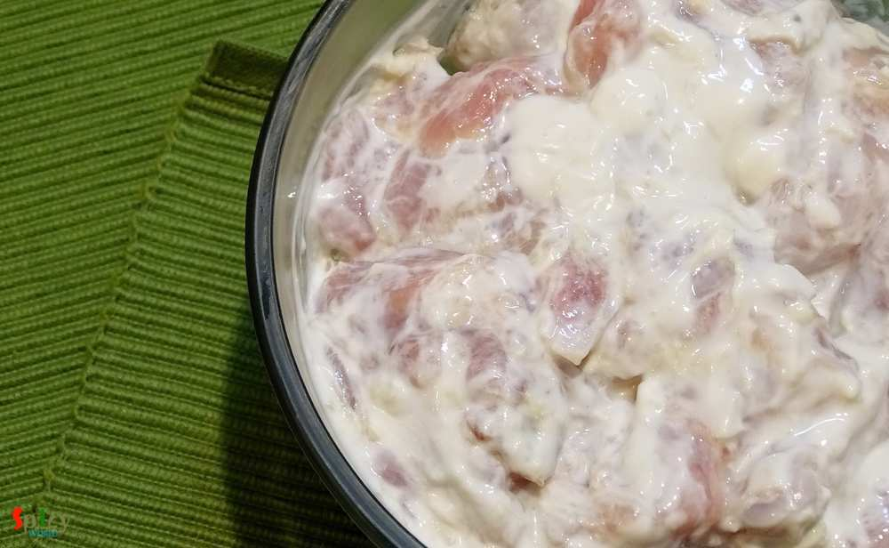
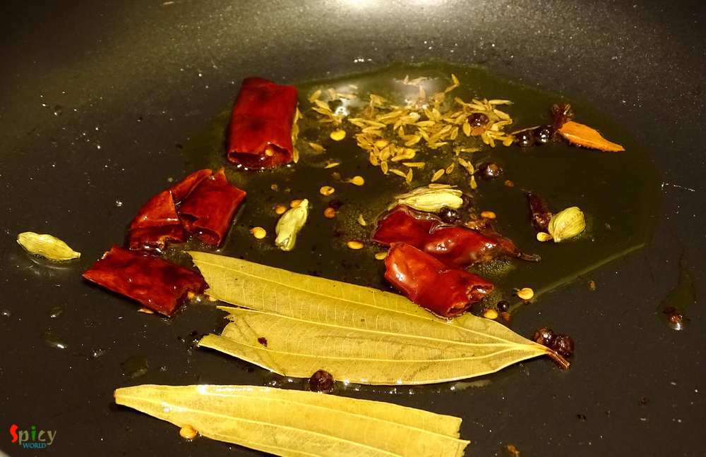
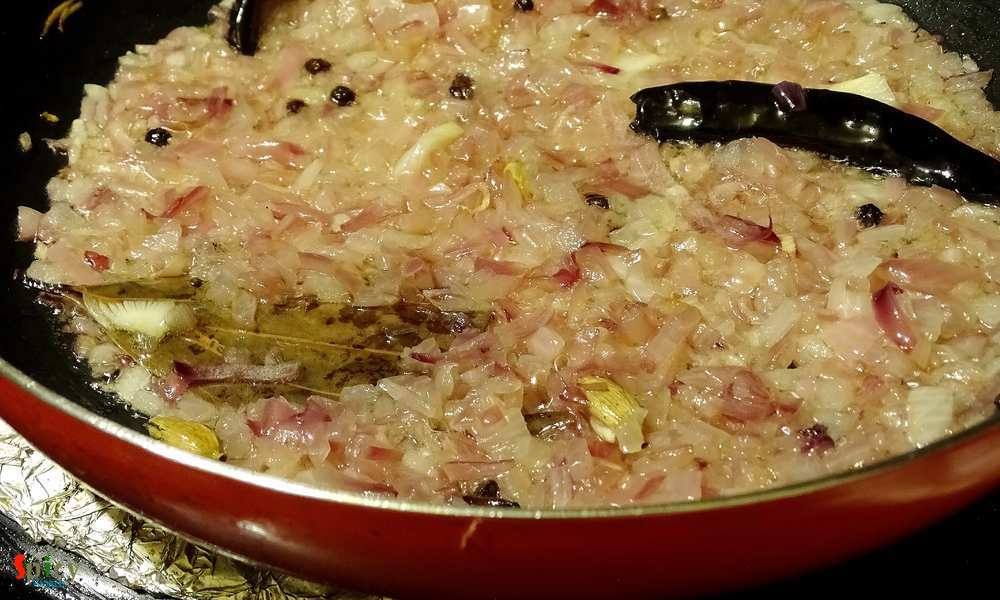
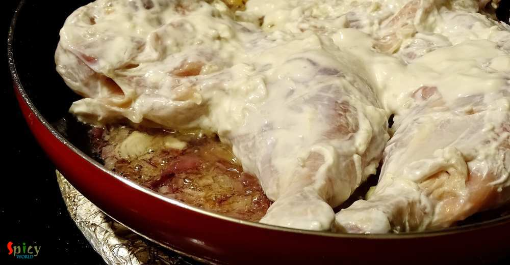
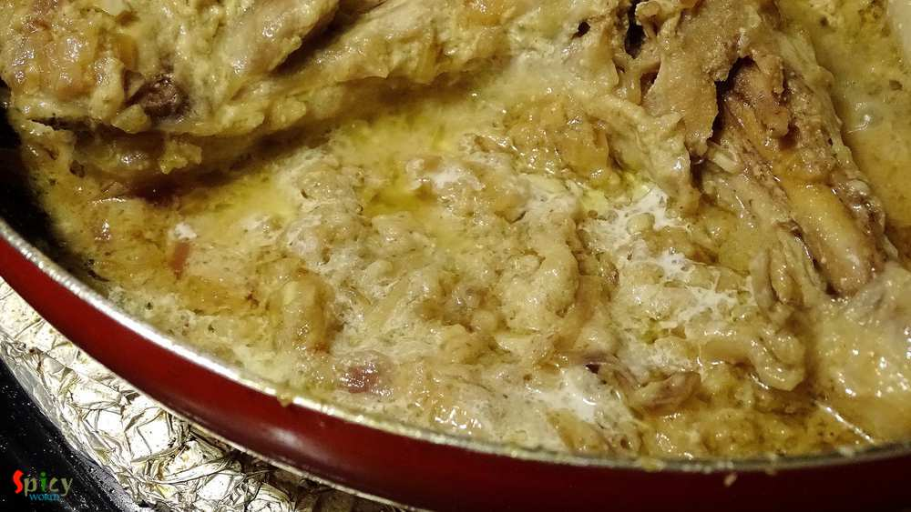
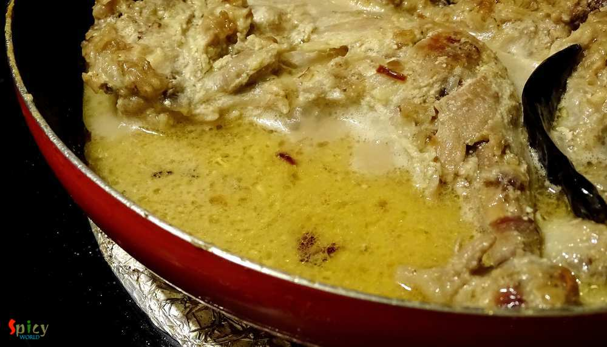
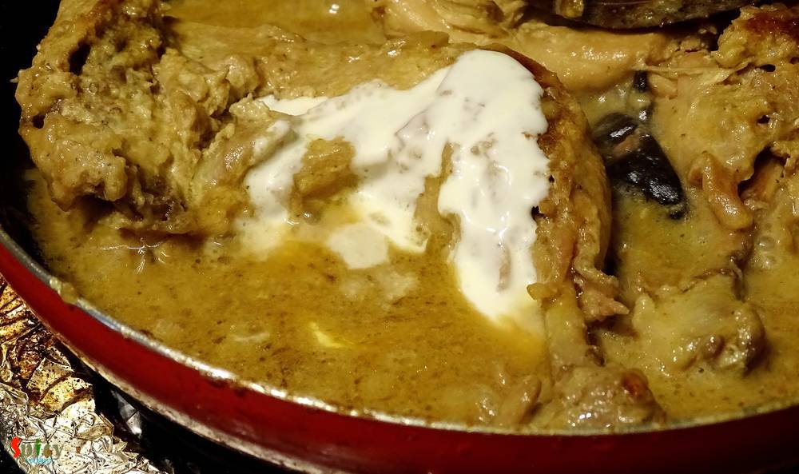
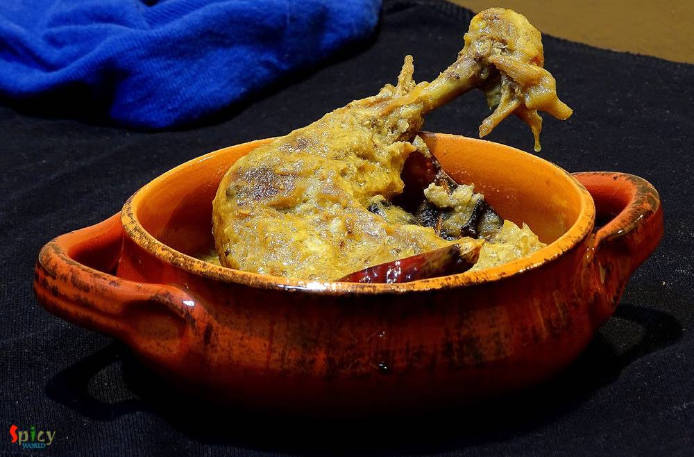

Simple and Easy Recipes
Chicken Rezala
© 2016 Spicy World, Published on: Mar 26, 2016
The maincourse dishes from 'mughlai cuisine' has rich, oily, flavorful gravy and my husband is a fan of their cuisine. One of our common favorite item is 'Chicken Rezala', thick + white + rich gravy with juicy chicken pieces. I like my rezala with thick gravy but many people also like to eat thin rezala gravy. I have already shared 'fish rezala' recipe with you and now it's time for chicken. You can make the white gravy in many ways but here I am sharing the easiest way and believe me, you won't find any difference in taste and flavor. Try this in your kitchen and enjoy with your family.

Ingredients
- Half kg chicken with bone.
- 1 big onion, finely chopped.
- 1 Tablespoon of ginger and garlic paste.
- 4 - 5 Tablespoons of curd.
- Whole spices (3 dry red chilies, 5 black peppercorns, 4 green cardamom, 4 cloves, 1 bay leaf, 1 small cinnamon stick).
- Salt and sugar.
- Half Teaspoon of rose water / kewra water.
- 3 Tablespoons of poppy seeds and cashew nuts paste.
- 1 Teaspoon of garam masala.
- 2 Tablespoons of heavy cream.
- 2 Teaspoons of oil and 2 Teaspoons of ghee.


Steps
Marinate the chicken pieces with ginger and garlic paste, curd and some salt for 2 hours.
Heat oil and ghee in a pan.
Add all the whole spices into the hot oil and saute for few seconds.
Then add chopped onion, pinch of salt and fry till they become translucent.
Add the marinated chicken and cook on medium flame for 8 minutes.
Then cover the pan and cook for 12 minutes in low heat.
Add garam masala, 1 Teaspoon of sugar, some salt and the paste of poppy seeds and cashew nuts. Cook for another 7 minutes.
Add some warm water and cook until the chicken becomes soft.
Lastly add heavy cream and rose water over the cooked chicken. Give it a good mix and turn off the heat.
Let it rest for 4-5 minutes then serve.
Your chicken rezala is ready ...
Enjoy this hot with naan, biriyani or pulao ...
")